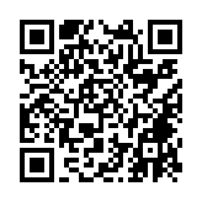

Дышу
Дневник пикфлоуметрии

Открыть дневник
- Наведите камеру телефона на QR-код.
- Откройте страницу в Safari на iPhone или Chrome на Android.
- Добавьте приложение на главный экран через меню браузера.
- В профиле перенесите назначения врача. Регулярно сохраняйте резервную копию.
Без регистрации. Записи хранятся на вашем устройстве. Отчёт можно показать врачу или сохранить в PDF.
Для печати этой карточки используйте меню браузера.